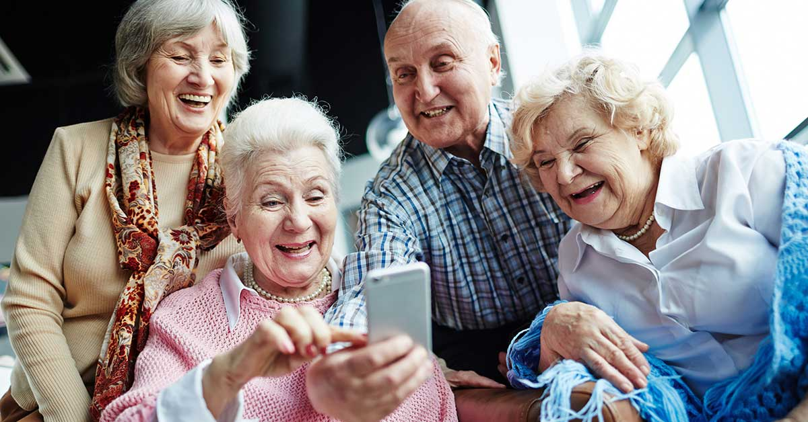
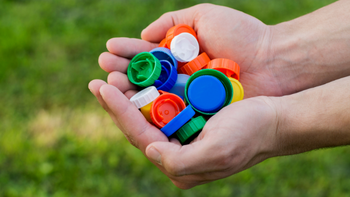
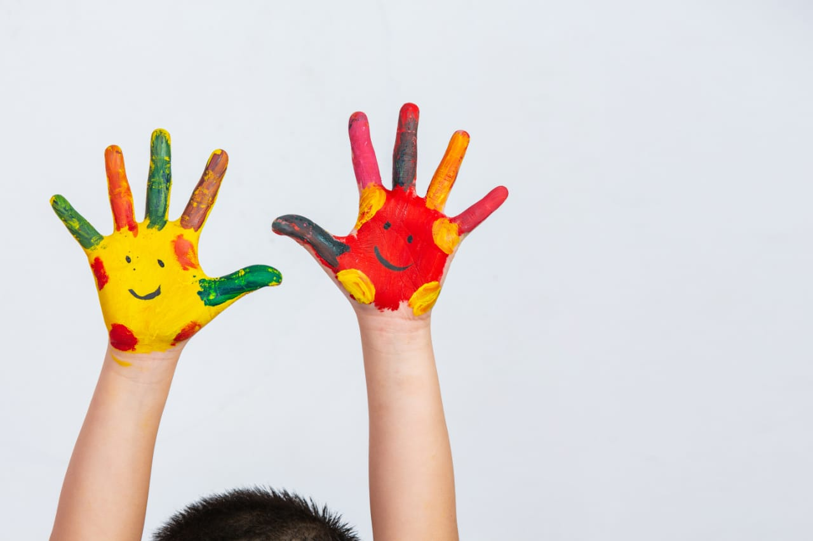
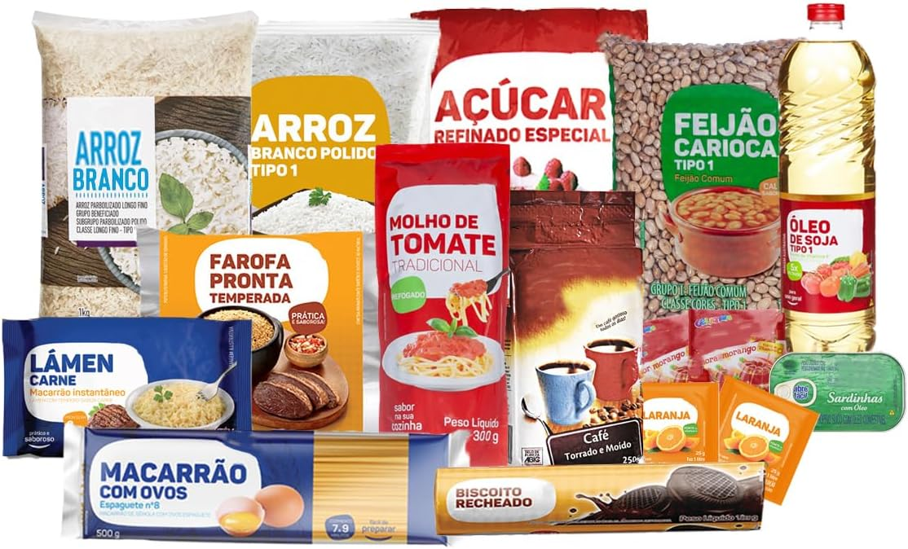
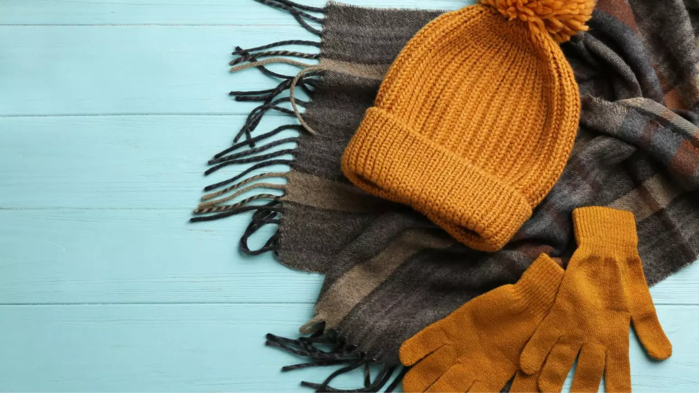

Nossos Projetos

💖 Projeto 1: Visita ao Asilo
Nosso grupo visita lares de idosos levando carinho, atenção e alegria. Também arrecadamos roupas e produtos de higiene que doamos ao local.

♿ Projeto 2: Arrecadação de Tampinhas para Cadeiras de Rodas
Campanha contínua para arrecadar tampinhas plásticas que serão convertidas em cadeiras de rodas para pessoas com deficiência física, promovendo mobilidade e independência.

🎁 Projeto 3: Ajude uma Criança do Orfanato
Organizamos campanhas de doação de roupas, alimentos, produtos de higiene e brinquedos, levando alegria e dignidade às crianças em situação de vulnerabilidade social.

🍞 Projeto 4: Doações de Alimentos
Todos os meses arrecadamos alimentos e montamos cestas básicas para 31 famílias que acompanhamos com muito carinho e dedicação.

🧥 Projeto 5: Campanha de Roupas de Inverno
Arrecadação e distribuição de roupas de frio para famílias e pessoas em situação de rua durante o inverno, garantindo conforto, dignidade e cuidado para quem mais precisa.